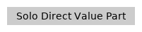
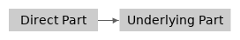

Value Parts
The articles following the current one will introduce more kinds of Go types. To easily and deeply understand those articles, it is best to read the following content in the current article firstly before reading those articles.
Two Categories of Go Types
Go can be viewed as a C-family language, which can be confirmed from the two previous articles pointers in Go and structs in Go. The memory structures of struct types and pointer types in Go and C are much alike.
On the other hand, Go can be also viewed as a C language framework. This is mainly reflected from the fact that Go supports several kinds of types whose value memory structures are not totally transparent, whereas the main characteristic of C types is the memory structures of C values are transparent. Each C value in memory occupies one memory block (one continuous memory segment). However, a value of some kinds of Go types may often be hosted on more than one memory block.
Later, we call the parts (being distributed on different memory blocks) of a value as value parts. A value hosting on more than one memory blocks is composed of one direct value part and several underlying indirect parts which are referenced by that direct value part.
The above paragraphs describe two categories of Go types:| Types whose values each is only hosted on one single memory block | Types whose values each may be hosted on multiple memory blocks |
|---|---|
|  |  |
|
boolean types numeric types pointer types unsafe pointer types struct types array types |
slice types map types channel types function types interface types string types |
The following Go 101 articles will make detailed explanations for many kinds of types listed in the above table. The current article is just to make a preparation to understand those explanations more easily.
Note,- whether or not interface and string values may contain underlying parts is compiler dependent. For the standard Go compiler implementation, interface and string values may contain underlying parts.
- whether or not functions values may contain underlying parts is hardly, even impossible, to prove. In Go 101, we will view functions values may contain underlying parts.
The kinds of types in the second category bring much convenience to Go programming by encapsulating many implementation details. Different Go compilers may adopt different internal implementations for these types, but the external behaviors of values of these types must satisfy the requirements specified in Go specification.
The types in the second category are not very fundamental types for a language, we can implement them from scratch by using the types from the first category. However, by encapsulating some common or unique functionalities and supporting these types as the first-class citizens in Go, the experiences of Go programming become enjoyable and productive.
On the other hand, these encapsulations adopted in implementing the types in the second category hide many internal definitions of these types. This prevents Go programmers from viewing the whole pictures of these types, and sometimes makes some obstacles to understand Go better.
To help gophers better understand the types in the second category and their values, the following content of this article will introduce the internal structure definitions of these kinds of types. The detailed implementations of these types will not be explained here. The explanations in this article are based on, but not exactly the same as, the implementations used by the standard Go compiler.
Two Kinds of Pointer Types in Go
Before showing the internal structure definitions of the kinds of types in the second category, let's clarify more on pointers and references.
We have learned Go pointers in the article before the last.
The pointer types in that article are type-safe pointer types.
In fact, Go also supports type-unsafe pointer types.
The unsafe.Pointer type provided in the unsafe
standard package is like void* in C language.
In most other articles in Go 101, if not specially specified, when a pointer type is mentioned, it means a type-safe pointer type. However, in the following parts of the current article, when a pointer is mentioned, it might be either a type-safe pointer or a type-unsafe pointer.
A pointer value stores a memory address of another value, unless the pointer value is a nil pointer. We can say the pointer value references the other value, or the other value is referenced by the pointer value. Values can also be referenced indirectly.-
If a struct value
ahas a pointer fieldbwhich references a valuec, then we can say the struct valueaalso references valuec. -
If a value
xreferences (either directly or indirectly) a valuey, and the valueyreferences (either directly or indirectly) a valuez, then we can also say the valuex(indirectly) references valuez.
Below, we call a struct type with fields of pointer types as a pointer wrapper type, and call a type whose values may contains (either directly or indirectly) pointers a pointer holder type. Pointer types and pointer wrapper types are all pointer holder types. Array types with pointer holder element types are also pointer holder types. (Array types will be explained in the next article.)
(Possible) Internal Definitions of the Types in the Second Category
To better understand the runtime behaviors of values of the second category, it is not a bad idea that we could think these types are internally defined as types in the first category, which are shown below. If you haven't used all kinds of Go types much, currently you don't need to try to comprehend these definitions clearly. Instead, it is okay to just get a rough impression on these definitions and reread this article when you get more experience in Go programming later. Knowing the definitions roughly is good enough to help Go programmers understand the types explained in the following articles.
Internal definitions of map, channel and function types
// map types
type _map *hashtableImpl
// channel types
type _channel *channelImpl
// function types
type _function *functionImpl
So, internally, types of the three kinds are just pointer types. In other words, the direct parts of values of these types are pointers internally. For each non-zero value of these types, its direct part (a pointer) references its indirect underlying implementation part.
BTW, the standard Go compiler uses hashtables to implement maps.
Internal definition of slice types
type _slice struct {
// referencing underlying elements
elements unsafe.Pointer
// number of elements and capacity
len, cap int
}
So, internally, slice types are pointer wrapper struct types.
Each non-zero slice value has an indirect underlying part
which stores the element values of the slice value.
The elements field of the direct part references
the indirect underlying part of the slice value.
Internal definition of string types
type _string struct {
elements *byte // referencing underlying bytes
len int // number of bytes
}
So string types are also pointer wrapper struct types internally.
Each string value has an indirect underlying part storing
the bytes of the string value, the indirect part is referenced
by the elements field of that string value.
Internal definition of interface types
type _interface struct {
dynamicType *_type // the dynamic type
dynamicValue unsafe.Pointer // the dynamic value
}
Internally, interface types are also pointer wrapper struct types.
The internal definition of an interface type has two pointer fields.
Each non-zero interface value has two indirect underlying parts
which store the dynamic type and dynamic value of that interface value.
The two indirect parts are referenced by the dynamicType
and dynamicValue fields of that interface value.
type _interface struct {
dynamicTypeInfo *struct {
dynamicType *_type // the dynamic type
methods []*_function // method table
}
dynamicValue unsafe.Pointer // the dynamic value
}
The methods field of the dynamicTypeInfo field
of an interface value stores the implemented methods of the dynamic type
of the interface value for the (interface) type of the interface value.
Underlying Value Parts Are Not Copied in Value Assignments
Now we have learned that the internal definitions of the types in the second category are pointer holder (pointer or pointer wrapper) types. Knowing this is very helpful to understand value copy behaviors in Go.
In Go, each value assignment (including parameter passing, etc) is a shallow value copy if the involved destination and source values have the same type (if their types are different, we can think that the source value will be implicitly converted to the destination type before doing that assignment). In other words, only the direct part of the source value is copied to the destination value in a value assignment. If the source value has underlying value part(s), then the direct parts of the destination and source values will reference the same underlying value part(s), in other words, the destination and source values will share the same underlying value part(s).

In fact, the above descriptions are not 100% correct in theory, for strings and interfaces. The official Go FAQ says the underlying dynamic value part of an interface value should be copied as well when the interface value is copied. However, as the dynamic value of an interface value is read only, the standard Go compiler/runtime doesn't copy the underlying dynamic value parts in copying interface values. This can be viewed as a compiler optimization. The same situation is for string values and the same optimization (made by the standard Go compiler/runtime) is made for copying string values. So, for the standard Go compiler/runtime, the descriptions in the last section are 100% correct, for values of any type.
Since an indirect underlying part may not belong to any value exclusively,
it doesn't contribute to the size returned by the unsafe.Sizeof function.
About the "Reference Type" and "Reference Value" Terminologies
- only slice, map, channel and function types are reference types in Go. (If we do need the reference type terminology in Go, then we shouldn't exclude any pointer holder types from reference types).
- references are opposites of values. (If we do need the reference value terminology in Go, then please view reference values as special values, instead of opposites of values.)
- some parameters are passed by reference. (Sorry, all parameters are passed by copy, of direct parts, in Go.)
I don't mean the reference type or reference value terminologies are totally useless for Go, I just think they are not very essential, and they bring many confusions in using Go. If we do need these terminologies, I prefer to define them as pointer holders. And, my personal opinion is it is best to limit the reference word to only representing relations between values by using it as a verb or a noun, and never use it as an adjective. This will avoid many confusions in leaning, teaching and using Go.
If you would like to learn some Go details and facts every serveral days, please follow Go 101's official Twitter account: @go100and1.
The Go 101 project is hosted on Github. Welcome to improve Go 101 articles by submitting corrections for all kinds of mistakes, such as typos, grammar errors, wording inaccuracies, description flaws, code bugs and broken links.
- Leanpub store, $19.99+, Leanpub gets 20%, Tapir gets 80%.
- Apple Books store, $19.99, Apple gets 30%, Tapir gets 70%.
- Amazon Kindle store, $39.99, Amazon gets 65%, Tapir gets 35%.
- Free ebooks, including pdf, epub and azw3 formats.
- Color Infection (★★★★★), a physics based original casual puzzle game. 140+ levels.
- Rectangle Pushers (★★★★★), an original casual puzzle game. Two modes, 104+ levels.
- Let's Play With Particles, a casual action original game. Three mini games are included.